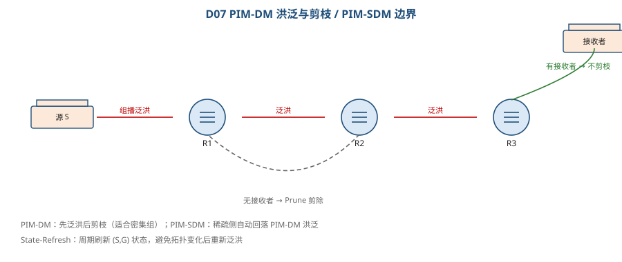
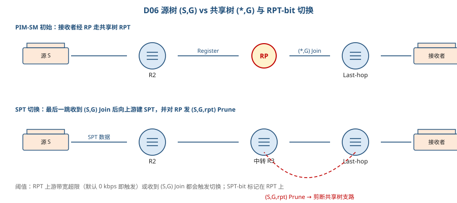

第 4 章 PIM-DM：推模型与泛洪-剪枝
精读来源：Williamson Ch2（p.46–48，Dense Mode 只用 SPT、Prune 状态机）、Ch10（"Using PIM Dense Mode"，p.42 明确指向该章）、Aweya Ch1（p.16–18）、Ch3（p.148–150，Graft/Graft-Ack 报文类型） 本章解决的问题：没有 RP、没有接收者信息时，怎么"先送出去再收回来"——以及这个模型为什么在现网基本被淘汰，却仍然值得学。
学习目标
- 说清 PIM-DM 是"隐式 join"（implicit join）：为什么泛洪本身就是一种加入；
- 画出初始泛洪 → Prune → 重新泛洪的完整时序；
- 记住 Prune 定时器（210 s）与 State Refresh（60 s）的关系，解释"3 分钟抖动"这一经典现象；
- 说清 Graft 的触发与报文类型（6/7），以及它为什么是单播；
- 说明 PIM-DM 只用 SPT、状态数 = 源数 × 组数 的后果；
- 判断什么场景下 DM 反而比 SM 合适（以及绝大多数场景不适用的原因）。
1. 推模型：先送，再问"要不要"
Aweya p.16 的原文措辞很准确：PIM-DM 采用 "implicit join model"，路由器用 "flood-and-prune" 行为——没有显式的加入流程，泛洪到达即等于加入。
对比两种模型的本质差别：
| 维度 | PIM-DM（推） | PIM-SM（拉） |
|---|---|---|
| 初始行为 | 收到第一个包就朝所有 PIM 邻居泛洪 | 只朝有 Join 的路径发 |
| 接收者信息 | 事后通过 Prune 得到 | 事前通过 Join 得到 |
| 树 | 只用 SPT（S,G） | RPT（*,G）+ 可选 SPT |
| 状态数 | 源数 × 组数 | 组数（RPT）+ 活跃源的 SPT |
| 首包延迟 | 低（不等建树） | 高（等 Join/注册） |
| 带宽浪费 | 收敛期显著 | 几乎无 |
Williamson p.46 明确写着："Dense mode protocols such as DVMRP and PIM-DM employ only SPTs"——DM 里不存在共享树，这是它状态爆炸的根据。
2. 五个阶段：从泛洪到稳定
阶段 1：初始泛洪（Flood）
源 S 发出第一个包 → 源 DR 从所有 PIM 接口泛洪（除入接口）→ 每台路由器做 RPF 检查：
- RPF 通过 → 继续朝下游泛洪，并建（S,G）；
- RPF 失败 → 丢弃（这就是"泛洪不会成环"的原因）。
阶段 2：剪枝（Prune）
叶路由器发现"本网段没有接收者（无 IGMP 成员、无下游 PIM 邻居）" → 向上游发 Prune。
上游收到 Prune 后把该接口置为 Pruned 状态（W p.47 原文："the router places that interface into Pruned state"），并： - 若所有下游接口都被剪掉 → 继续向上游发 Prune； - 若还有其他下游 → 只剪这一个口。
阶段 3：Prune 超时与重新泛洪
W p.47 的关键一句："Prunes have a timeout value associated with them such that, when they time out, they cause…"——剪枝状态会过期，过期后流量重新泛洪下来，再被重新剪掉。
210 s（默认 Prune 超时）→ 状态失效 → 重新泛洪 → 重新剪枝
这就是 PIM-DM 的经典缺陷：在没有任何接收者的分支上，每 3 分钟仍会有一次泛洪。
阶段 4：State Refresh（RFC 3973 的补丁）
为解决"周期性泛洪"，PIM-DM 引入 State Refresh 报文：上游每 60 s 向下游发一次"剪枝状态仍然有效"，下游据此刷新 Prune 定时器，不必等超时再泛洪。
前提：整域内所有路由器都支持并启用 State Refresh（Hello 里带 Option 6）。只要有一台老设备不支持，退化回 210 s 泛洪。
阶段 5：Graft（新接收者加入）
被剪掉的分支来了新接收者时，不需要等 3 分钟：路由器发 Graft（类型 6）单播沿 RPF 方向逐跳上行，上游回 Graft-Ack（类型 7）（Aweya p.149–150 原文列出这两类报文与"Unicast to RPF interface of source"）。
新成员出现 → 叶路由器发 Graft（单播） → 上游立即恢复转发 → 回 Graft-Ack
3. Assert 在 DM 里更频繁
DM 的泛洪特性使"同一网段多台上游都往下发"的概率大增，Assert（第 3 章）在 DM 域里会非常频繁地触发。这也是 DM 在共享 LAN（尤其是双上联）里表现差的原因之一。
4. 配置（Cisco）
ip multicast-routing
interface GigabitEthernet0/1
ip pim dense-mode ! 老写法；新平台为 ip pim dense-mode / sparse-dense-mode
! 边界（必须有，否则泛洪出域）
ip access-list standard DM-BOUNDARY
permit 239.0.0.0 0.255.255.255
interface GigabitEthernet0/0
ip multicast boundary DM-BOUNDARY
排障命令：
show ip mroute ! 看 (S,G) 的 flags：D= Dense, P= Pruned
show ip mroute 239.1.1.10 ! 看各接口状态：prune/dense
show ip pim interface ! 模式与邻居数
show ip pim neighbor
debug ip pim ! 看 prune/graft（高 CPU 风险）
5. 拓扑图

图 4-1 泛洪-剪枝：源 S 首包朝所有 PIM 接口泛洪（绿线）；无接收者的分支发 Prune（红线）后被置为 Pruned；210 s 后状态失效会重新泛洪（虚线），除非启用 State Refresh。

图 4-2 为什么 DM 只有源树：左侧（S,G）源树就是 DM 的全部；DM 不使用中间那棵（*,G）共享树，因此每个源都要独立建树。
6. 工程案例（8 例）
案例 4-1：DM 域每 3 分钟一次"无缘无故的带宽尖峰"
现象：某工厂监控网用 PIM-DM，核心-分支专线每约 3 分钟出现一次 30 Mbps 尖峰（该分支无任何接收者），持续 1–2 秒。
定位
show ip mroute 239.1.1.20 ! 分支侧无 (S,G)；上游接口周期性 prune
show ip mroute 239.1.1.20 count ! 上游计数每 210 s 增加
show ip pim neighbor detail ! Hello 选项中无 "State Refresh"
根因：Prune 超时 210 s 后状态失效 → 重新泛洪 → 被重新剪掉。域内混入了不支持 State Refresh 的老设备，导致整域退化。
处置：全域名设备启用 State Refresh（ip pim state-refresh origination-interval 60 源侧 + 全域名支持）；无法统一时改用 PIM-SM。
复盘：看到"≈210 s（3 分半）周期"的异常，直接判定 PIM-DM Prune 超时，不必查数据面。
案例 4-2：DM 网络里加一个新接收者，要等 3 分钟才有画面
现象：新开一个监控终端，加入后要 2–3 分钟才出图。
定位
show ip mroute 239.1.1.20 ! 该分支接口处于 pruned
debug ip pim graft ! 无 Graft 发出
根因：Graft 依赖"接口状态仍存在但被剪"；若该（S,G）在上游已超时删除（而非仅 Pruned），新成员加入只能等下一条数据触发重新泛洪。加上 Graft 的 RPF 上游若配置了 ip pim dense-mode 但中间链路丢包，Graft-Ack 丢失会重试。
处置：确认 State Refresh 启用（保证状态不消失）；中继链路检查 MTU/分片（Graft-Ack 很小，一般不是 MTU 问题）；开启 ip pim state-refresh 后延迟降到秒级。
复盘：DM 的加入延迟取决于"状态是否还在"，不是"配置对不对"。
案例 4-3：DM 泛洪打满低带宽专线，业务中断
现象：某分支 2 Mbps 专线，总部推 6 Mbps 视频，分支无接收者，但专线被打满。
定位
show interface Serial0/0/0 | include "output rate"
show ip mroute 239.1.1.30 ! 分支侧 pruned，但每 210 s 泛洪一段
根因：DM 的初始泛洪与周期泛洪不看下游带宽；加上未配置边界，整段 239/8 都在泛洪。
处置：边界 ACL 只放行业务组；专线侧对组播做限速（rate-limit/QoS policing）；架构上改为 SM。
复盘：DM 与低带宽/高延迟链路天生不兼容。凡是 WAN 场景，一律不选 DM。
案例 4-4：DM 域内状态数爆炸，设备内存告警
现象：500 路源 × 20 个组，核心路由器 mroute 条目 10 万+，CPU 40%，内存告警。
定位
show ip mroute summary ! 条目数
show ip mroute count | include "Group"
根因：DM 只用 SPT，状态数 = 源数 × 组数；而其中大量源长期无接收者，状态只靠 Prune 维持，永远不释放。
处置：迁移 PIM-SM（状态数降到组数量级，且可用 spt-threshold infinity 进一步压）；短期加 ip pim dense-mode 的边界与源过滤。
复盘：状态规模是选择 DM/SM 的第一判据，不是"哪种更简单"。
案例 4-5：DM 与 SM 混跑，边界处形成环路
现象：改造期部分区域用 SM、部分用 DM，边界出现重复包与"流量绕两圈"。
定位
show ip mroute 239.1.1.40 ! 同一 (S,G) 在两个方向都有 OIF
debug ip pim ! 看到 prune 与 join 交替
根因：DM 的泛洪不认 SM 的（*,G）状态，SM 的 RP 又对 DM 域泛洪"不设防"，两边都把对方当"下游"，形成推-拉冲突。
处置：边界路由器用 ip pim sparse-dense-mode 并在边界做组播边界 + 明确的 RP 覆盖范围；改造应"按域切换"，避免长期混跑。
复盘：DM/SM 混合是事故高发区，必须画出"哪个域用哪种模式"的边界图。
案例 4-6：show ip mroute 显示 D 与 P 同时存在，误判为故障
现象：运维看到 (S,G) flags: D P，以为状态异常。
定位
show ip mroute 239.1.1.50
! (10.1.1.100, 239.1.1.50), flags: D ← Dense
! Incoming interface: Gi0/0, RPF nbr 10.1.1.2
! Outgoing interface list:
! Gi0/1, Forward/Dense, 00:00:12/00:02:48
! Gi0/2, Prune/Dense, 00:02:30/00:00:30 ← P 表示该口被剪
根因：不是故障。D 表示该路由是 Dense 模式条目，Prune/Dense 表示该出接口处于剪枝状态。
处置：无需处置；把 Forward/Dense 与 Prune/Dense 的区别写进运维手册。
复盘：读懂 flags 能省一半无效工单。DM 的核心 flag 只有 D、P、A（Assert）。
案例 4-7：源侧 DR 不是预期设备，注册/泛洪路径错
现象：多台路由器接同一服务器网段，泛洪从"非预期"的那台出去，绕行 3 跳。
定位
show ip pim interface Gi0/3 ! DR 字段显示非预期设备
show ip pim neighbor ! 各台 DR priority
根因：DM 里 DR 主要承担 IGMP Querier 与本地转发职责，选举按 priority/IP；网段内 IP 最大的设备当选，而设计上希望"出口路由器"当选。
处置：出口路由器设 ip pim dr-priority 100；其他设默认。
复盘：DR 要显式设计（与第 3 章同一结论）。
案例 4-8：DM 用于小规模监控网反而最省事（正面案例）
现象：某园区 3 台路由器、1 个源、8 个接收者，全部在同一广播域内，用 SM 需配 RP、易出错。
定位：规模评估——源 1 个、组 3 个、域内 3 跳。
结论：改用 PIM-DM 后配置只有 3 行（ip multicast-routing + 接口 ip pim dense-mode），无 RP、无 MSDP，稳定运行。
复盘：DM 并非"技术落后"，而是"规模不经济"。源少、组少、域小、带宽充裕的场景，DM 的运维成本最低。判断标准：状态数（源×组）< 100 且域内无 WAN 链路。
7. 自测清单
- 什么是 "implicit join"？它和 SM 的显式 Join 有何本质差别？
- PIM-DM 的初始泛洪为什么不会成环？
- Prune 的默认超时是多少？超时后会发生什么？
- State Refresh 解决什么问题？它成立的前提是什么？
- Graft 是单播还是组播？为什么？
- Assert 在 DM 中为什么更频繁？
- DM 的状态数公式？为什么它会"内存爆炸"？
Forward/Dense与Prune/Dense的区别？- 什么规模的网络适合 DM？给出三个判据。
- DM 改造为 SM 时，最先要处理的是什么（提示：边界与 RP）？
8. 原文精读索引
纸面页码实测：Williamson = PDF 页 − 21；Aweya = PDF 页 − 21。
| 知识点 | 书/节 | 纸面页 | 原文可核对要点 |
|---|---|---|---|
| 密集/稀疏两种模型 | W Ch2 | p.46 | "Dense mode protocols (DVMRP and PIM-DM)"；"employ only SPTs" |
| Flood and Prune 行为 | W Ch2 | p.46–47 | Prune 把接口置 Pruned 状态；Prune 有超时，超时后重新泛洪（Figure 2-20） |
| 推模型的适用与代价 | W Ch2 | p.48 | 密集模式在成员稀疏时浪费带宽 |
| PIM-DM 详细章节指引 | W Ch2 | p.42 | 原文指向 "Chapter 10, Using PIM Dense Mode" |
| implicit join / flood-and-prune | Aweya Ch1 | p.16–17 | "PIM-DM operates on an implicit join model" |
| SM 与 DM 的模型对比 | Aweya Ch1 | p.17–18 | 稀疏模式显式 join；密集模式初始泛洪 |
| Graft / Graft-Ack 类型值 | Aweya Ch3 | p.149–150 | "6 = Graft (PIM-DM only)"、"7 = Graft-Ack (PIM-DM only)"；Graft 单播至 RPF |
| Join/Graft 对 Hold Time 的影响 | Aweya Ch3 | p.163 | 收到 Join 或 Graft 会刷新 Hold Time |
| Prune 210 s / State Refresh 60 s | RFC 3973 | — | 标准默认值；本书未逐字给出数值，按 RFC 标注 |
| PIM-DM 泛洪-剪枝-嫁接全流程 | W Ch6 | p.129、132 | 状态机演进与 RPF 检查的触发点 |
| DVMRP 的 prune/graft 对照 | W Ch5 | p.47–53 | 老协议怎么剪枝，PIM-DM 沿用了哪些字段 |
| PIM-DM 邻接与状态排障 | iP Ch3 | PDF p.55–60 | Hello/邻居建立与 show ip mroute 输出 |
| PIM Sparse-Dense 接口模式 | iP Ch5 | PDF p.155–164 | 接口级 dense/sparse 混跑与迁移 |
| Graft / Graft-Ack 的报文与流程 | Aweya §3.3.1 | p.163–169 | 嫁接请求的重传与确认 |
| State Refresh 机制 | Aweya | p.272–278 | 避免剪枝超时后重新泛洪的开销 |
9. 延伸
- 下一章：PIM-SM 与 RP 发现（全书的重点，也是现网默认选项）
- 标准：RFC 3973（PIM-DM）、RFC 4601（PIM-SM）
- 迁移建议：DM → SM 必须"按域切换 + 明确 RP 与边界"，不要长期混跑